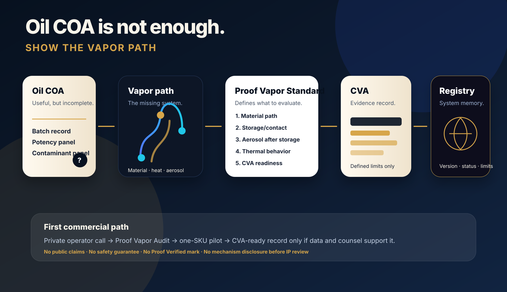
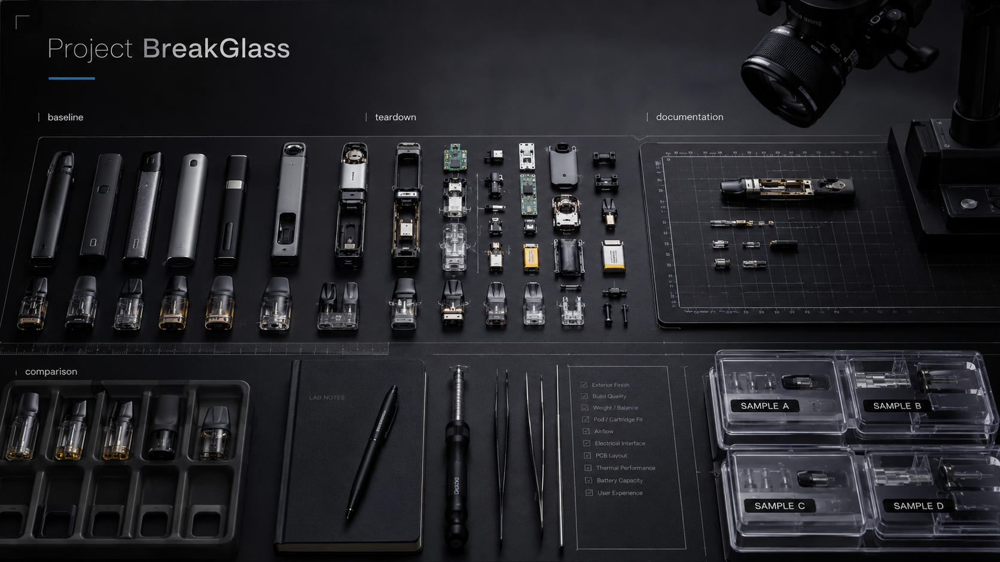
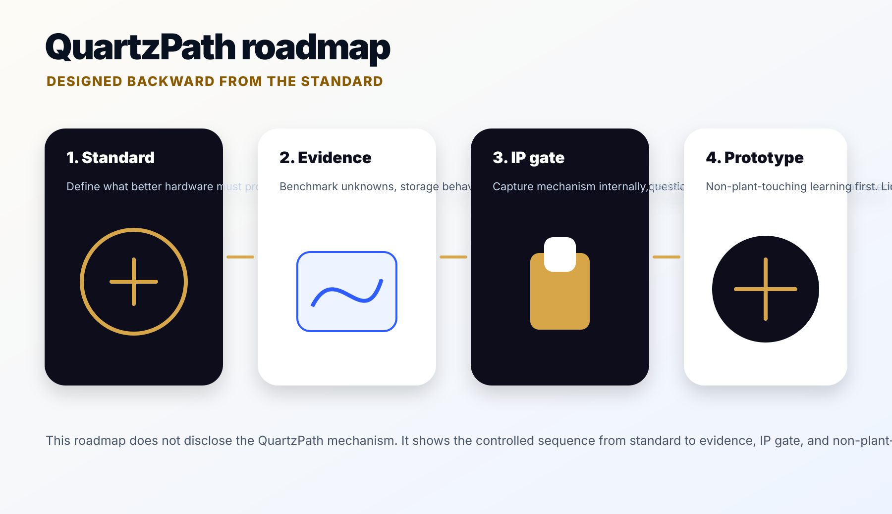
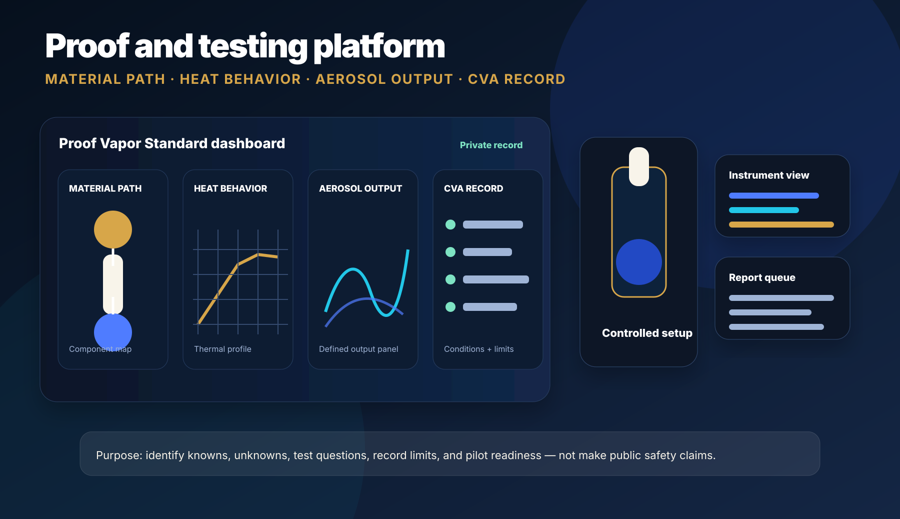

1. Define the proof layer
Proof Vapor Standard and CVA convert vague quality language into a structured evaluation and record system.
Proof Labs is building the full-lifecycle proof layer for cannabis vapor: material-path mapping, heating-element validation, controlled thermal testing, aerosol analysis, CVA records, registry infrastructure, and proof-native hardware standards.
The mission is simple: anything people inhale should be measured, mapped, and proven — not trusted because of branding.
Proof Labs is easiest to understand visually: prove the vapor path, create an evidence record, keep a registry, benchmark hardware, then build proof-native hardware backward from the standard.

Proof Vapor Standard and CVA convert vague quality language into a structured evaluation and record system.

Project BreakGlass converts supplier claims into component maps, unknowns, failure questions, and test requirements.

QuartzPath is the long-term hardware lane: fewer unknowns, tighter control, and registry-ready systems.
A standard oil COA can be useful. It does not fully answer what happened after oil sat inside a device, touched internal materials, met heat, moved through the vapor path, and emerged under real use conditions.
Reservoirs, seals, metals, ceramics, adhesives, polymers, mouthpieces, airflow paths, and heater-adjacent surfaces must be mapped.
Thermal profiles, hotspots, chain pulls, near-empty operation, and heater aging can change the system beyond the original oil record.
The relevant proof question is not only what went in. It is what came out after storage, aging, heat, and defined stress conditions.

Proof Labs starts with truth and standard because the standard defines what better hardware must satisfy. The long-term moat is standard, data, registry, IP, lab network, partner contracts, and proof-native hardware.